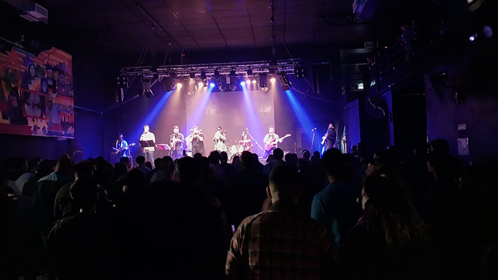

Quienes somos
La Nave del Ska es una banda inspirada en el ska tradicional jamaiquino de los años '50 creada en el 2017 en la ciudad de Quilmes.
Combinando la potencia del ska con arreglos percusivos típicos de Africa occidental como el burru. La Banda ofrece una propuesta potente y divertida, invitando al público a bailar y saltar al ritmo del ska.
Teniendo a The Skalites como su principal referencia, tocando algunas de sus canciones en vivo. También se encargan de reversionar canciones de artistas de otros estilos, como James Morrison y Whitney Houston, dándoles su propia impronta.
El pasado 23 de septiembre, La Nave se presento junto a Dancing Mood en Quilmes en una noche inolvidable compartiendo con la gente su último simple La Caída.
